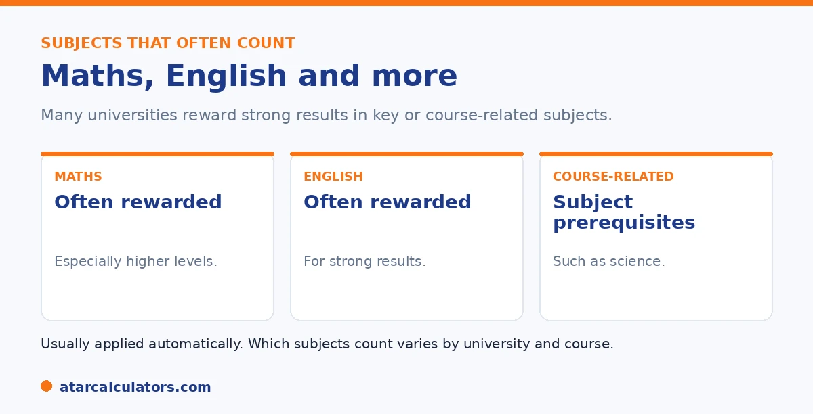

Here is the short version. Many universities reward strong results in certain subjects with bonus points, often maths and English, or subjects relevant to your course such as a science for engineering. These subject adjustments are usually applied automatically for local Year 12 students. Which subjects count, and how many points each is worth, vary by university and by course. So always check the specific course.
Subject bonus points are the easiest kind to earn, because they often come automatically for studying the right subjects well. The trick is knowing which subjects count.
Below is a guide to the subjects that often earn points, and how to check. To estimate yours, use our bonus points calculator.
Key takeaways
- Many universities reward strong results in certain subjects.
- These are often maths and English, or course-related subjects.
- Subject adjustments are usually automatic for local students.
- Which subjects count varies by university and course.
- Points within a scheme may not all add up.
- Interstate or IB students may need to apply for them.
The subjects that often count
While it varies, some subjects come up again and again. Here are the most common.

The most common are maths and English, often at higher levels. Beyond those, many universities reward subjects relevant to the course, such as a science for engineering or a language for an arts degree.
Maths and English
Maths and English are the classic subjects for bonus points. Many universities reward strong results in them, especially higher-level maths, because they are useful across so many courses.
The exact result you need, and the points it earns, vary by university. As a rule, the stronger your result and the higher the level, the more it tends to count.
Course-related subjects
Beyond maths and English, many universities reward subjects relevant to your chosen course. For an engineering degree, that might be physics or higher maths. For a language degree, a language subject.
This rewards students who have already studied what the course builds on. To find out which subjects count for your course, check that course's adjustment page. See our bonus points guide.
Want to estimate your subject points?
Try the bonus points calculator →How subject points add up
One thing surprises students: subject points often do not all add up. Many schemes give you the points for your best qualifying subject, not the sum of every qualifying subject.
So studying several qualifying subjects may not give several lots of points. Check each scheme's rules, since this varies. The total is also capped by the university.
Usually automatic, with exceptions
The good news is that subject adjustments are usually applied automatically for local Year 12 students. You do not need to apply, and you may already be getting them.
There are exceptions. Interstate students, and those with International Baccalaureate results, may not have subject adjustments applied automatically, and may need to contact the university. Check early if this is you.
It is worth knowing exactly who falls into the automatic group and who needs to act. This is because a subject bonus you are entitled to but do not get is a wasted advantage. For a local student sitting the standard senior certificate in the same state as the university, subject adjustments are typically applied by the admissions centre without any action from you. The system already knows your subjects and results. And the points appear in your selection rank for eligible courses. The students who most often slip through the cracks are those whose results sit outside that standard flow. They include interstate applicants whose subjects the receiving centre may not map automatically, and International Baccalaureate students. In some cases, they also include students returning from a gap year, or applying as non-recent school leavers. If you are in one of those groups, the safe move is to check the university's admissions or adjustment page. If in doubt, contact them before the offer round to confirm your subject bonuses will be counted. It is also worth verifying, whatever your situation, that the specific course you want actually offers the subject adjustment. This is because schemes are course-specific and a bonus that applies to engineering may not apply to an arts degree. A quick check costs nothing. An uncounted bonus can cost a place.
How subject bonus points work
Subject bonus points are adjustment factors awarded for studying particular subjects that a course values, usually because they relate to its content or prerequisites. They are added to your ATAR to form your selection rank for that course, and are often applied automatically.
So studying a subject a course rewards can lift your selection rank for it, without changing your ATAR. The subjects that attract points, and how many, are set by each university for each course. See how bonus points work.
Bonus points for languages
Many universities award bonus points for studying a language in Year 12, to encourage language study. This can apply broadly, not only to language-related degrees, so a language can lift your selection rank for a range of courses at some universities.
So if you studied a language, check whether your target universities award points for it. The amount and the courses it applies to vary, but a language is one of the more commonly rewarded subjects.
Bonus points for maths and sciences
Higher-level maths and sciences often attract bonus points, especially for courses in engineering, science, health and related fields where these subjects are relevant. Advanced maths in particular is commonly rewarded, reflecting its role as a foundation for many degrees.
So if you took higher maths or a science, check whether it earns points for your target courses. As always, the subjects rewarded and the points awarded depend on the university and the specific course.
The subject bonus cap
Subject bonus points are capped, both per subject and in total. A course might award a couple of points per eligible subject, up to a maximum, so studying several rewarded subjects does not add unlimited points. The cap is set by each university and course.
So there is a limit to what subject choice alone can add. Understanding the cap for your target courses helps you set realistic expectations about how much subject bonus points will lift your selection rank.
Prerequisites vs bonus points
It is worth distinguishing prerequisites from bonus points. A prerequisite is a subject you must have studied to be eligible for a course at all. A bonus point subject is one that lifts your selection rank but is not necessarily required. Some subjects are both.
So check both: the subjects you need to be eligible, and the subjects that earn adjustments. Missing a prerequisite can rule you out regardless of your rank, while bonus points only help once you are eligible.
Which universities offer subject bonus points
Most universities offer some form of subject adjustment, but the subjects rewarded, the points, and the courses they apply to differ widely. Some are generous and broad; others limit subject bonuses to closely related courses.
So there is no universal list of bonus-point subjects. Check each target university’s scheme for the courses you want, since the same subject can earn points at one university and none at another.
Choosing subjects for bonus points
Bonus points can inform subject choice, but they should not override doing well. A subject you can score highly in, that also earns points for your target course, is ideal. A rewarded subject you struggle in may cost you more in marks than it gains in points.
So start from your strengths and your prerequisites, then favour rewarded subjects where you can. Strong results matter more than chasing points in subjects that do not suit you.
When subject points are applied
Subject bonus points are usually applied automatically when your selection rank is calculated for an eligible course, based on the subjects recorded in your results. You generally do not need to apply for them separately, unlike equity or athlete schemes.
So for subject points, the main thing is to have studied the rewarded subjects; the admissions centre handles the rest. Still, it is worth confirming the subjects that count for your target courses, so you know what to expect.
Check each course separately
Because subject adjustments are set per course, the same subject can earn points for one course and none for another, even at the same university. So a subject that lifts your rank for engineering may do nothing for an unrelated degree.
So check the subject adjustments for each specific course you are considering, not just the university in general. This is the only reliable way to know which of your subjects will actually help for a given course.
Combining with other adjustments
Subject points combine with other adjustments, such as regional or equity points, up to the total cap for the course. So subject points are one part of your overall adjustment, not the whole picture, and they add to any other schemes you qualify for.
So consider your subject points alongside any regional, equity or athlete adjustments, and remember the total is capped. See how adjustments stack up to the cap.
Common questions
Which subjects give bonus points?
Often maths and English, or subjects relevant to your course, such as a science for engineering or a language for an arts degree. Which subjects count, and how many points, vary by university and course.
Do you get bonus points for maths?
Often, yes. Many universities reward strong results in maths, especially higher levels, because it is useful across many courses. The exact result needed and the points earned vary by university.
Do languages give bonus points?
At many universities, yes, particularly for relevant courses such as a language or arts degree. As with all subject adjustments, which languages count and how many points vary by university and course.
How many bonus points do subjects give?
It varies by university. Many schemes give the points for your best qualifying subject rather than the sum of all of them, and the total is capped. Check each course's adjustment page for the detail.
Are subject bonus points automatic?
Usually, for local Year 12 students. Interstate students and those with International Baccalaureate results may not have them applied automatically, and may need to contact the university to have them allocated.
Estimate your subject points
See how many adjustment factors you might get and your likely selection rank. Free, and no signup.
Open the bonus points calculator →Related guides
This guide is general information for students and parents, not formal admissions advice. Adjustment factors, schemes, caps and course cut-offs are set by each university and can change every year. They differ from one institution to another, and from course to course within the same institution. Always confirm the current details with the specific university and your state admissions centre (UAC, VTAC, QTAC, SATAC or TISC). A useful starting point is UAC's guide to selection rank adjustments. Reviewed by the ATARCalculators Editorial Team.